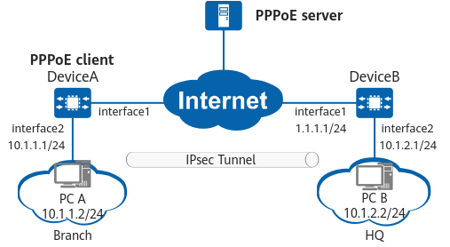

Example for Configuring a Branch That Obtains IP Addresses Through DHCP to Initiate IPsec Tunnel Negotiation
Networking Requirements
In Figure 1, DeviceA is the gateway of an enterprise branch, and DeviceB is the gateway of the enterprise headquarters (HQ). The branch and HQ communicate over the Internet. DeviceA operates as a DHCP server to dynamically assign IP addresses to branch users, and also functions as a PPPoE client to obtain an IP address from the PPPoE server for Internet access.
The enterprise wants to protect traffic transmitted over the Internet between the branch and HQ. To this end, an IPsec tunnel can be established between the HQ gateway and branch gateway. The branch gateway functions as a PPPoE client and obtains an IP address, but the HQ gateway cannot obtain its IP address. Therefore, the HQ gateway can only respond to the IPsec negotiation initiated by the branch gateway.

In this example, interface 1 and interface 2 represent 10GE 0/0/1 and 10GE 0/0/2 on DeviceA, respectively.

Item |
Data |
|---|---|
DeviceA |
Interface: 10GE 0/0/1 |
Interface: 10GE 0/0/2 IP address: 10.1.1.1/24 |
|
PPPoE configuration Dialer interface: Dialer1 Interface encapsulation protocol: PPP CHAP authentication user name: user1@system.com CHAP authentication password: YsHsjx_202206 Bound physical interface: 10GE 0/0/1 |
|
DHCP configuration Global address pool: pool1 Network segment available in the address pool: 10.1.1.0/24 |
|
IPsec configuration Remote address: 1.1.1.1 Authentication type: pre-shared key Pre-shared key: YsHsjx_202206 |
|
DeviceB |
Interface: 10GE 0/0/1 IP address: 1.1.1.1/24 |
Interface: 10GE 0/0/2 IP address: 10.1.2.1/24 |
|
IPsec configuration Remote address: any address Authentication type: pre-shared key Pre-shared key: YsHsjx_202206 |
Configuration Roadmap
The tunnel negotiation parameter settings on DeviceA and DeviceB must be the same.
This example uses default security algorithms of IPsec.
For security purposes, you are advised not to use the weak security algorithm or weak security protocol of this feature. If you must use such a weak security algorithm or protocol, run the install feature-software WEAKEA command to install the weak security algorithm or protocol feature package WEAKEA.
- Configure DeviceA as a PPPoE client so that it can obtain an IP address from the PPPoE server.
- Configure DeviceA as a DHCP server to dynamically assign IP addresses to branch users.
- Configure an ISAKMP IPsec policy on DeviceA and apply an IPsec policy group to an interface as needed.
- Configure an IPsec policy template on DeviceB, which functions as the responder and accepts the IPsec negotiation initiated by DeviceA.
Procedure
- Configure DeviceA as a PPPoE client so that it can obtain an IP address from the PPPoE server.
# Create a dialer interface Dialer1 and set parameters for it.
<HUAWEI> system-view [HUAWEI] sysname DeviceA [DeviceA] interface dialer 1 [DeviceA-Dialer1] link-protocol ppp [DeviceA-Dialer1] ppp chap user user1@system.com [DeviceA-Dialer1] ppp chap password cipher YsHsjx_202206 [DeviceA-Dialer1] ip address ppp-negotiate [DeviceA-Dialer1] quit
# Bind the dialer interface to the physical interface 10GE 0/0/1 to establish a PPPoE session.
[DeviceA] interface 10ge 0/0/1 [DeviceA-10GE0/0/1] pppoe-client dialer 1 bundle-number 1 [DeviceA-10GE0/0/1] quit
# Configure an IP address for 10GE 0/0/2.
[DeviceA] interface 10ge 0/0/2 [DeviceA-10GE0/0/2] ip address 10.1.1.1 24 [DeviceA-10GE0/0/2] quit
# Configure static routes to the peer end and specify Dialer1 as the next hop of the routes.
[DeviceA] ip route-static 1.1.1.1 24 dialer1 [DeviceA] ip route-static 10.1.2.0 24 dialer1
- Configure DeviceA as a DHCP server to dynamically assign IP addresses to branch users.# Enable the DHCP function and configure a global address pool.
[DeviceA] dhcp enable [DeviceA] ip pool pool1 [DeviceA-ip-pool-pooltest] network 10.1.1.0 mask 255.255.255.0 [DeviceA-ip-pool-pooltest] quit
# Enable the DHCP server function based on the global address pool on an interface.[DeviceA] interface 10ge 0/0/2 [DeviceA-10GE0/0/2] dhcp select global [DeviceA-10GE0/0/2] quit
- Configure ISAKMP IPsec policies on DeviceA and apply an IPsec policy group to 10GE 0/0/1.
- Configure an IPsec policy.
[DeviceA] ipsec policy map1 10 isakmp [DeviceA-ipsec-policy-isakmp-map1-10] security acl 3000 [DeviceA-ipsec-policy-isakmp-map1-10] proposal tran1 [DeviceA-ipsec-policy-isakmp-map1-10] ike-peer b [DeviceA-ipsec-policy-isakmp-map1-10] sa trigger-mode auto [DeviceA-ipsec-policy-isakmp-map1-10] quit
By default, the negotiation for IPsec tunnel establishment is triggered by traffic. To enable automatic negotiation for IPsec tunnel establishment, run the sa trigger-mode auto command.
- Configure an IPsec policy.
- Configure public and private network interfaces on DeviceB.
# Configure the public network interface 10GE 0/0/1.
<HUAWEI> system-view [HUAWEI] sysname DeviceB [DeviceB] interface 10ge 0/0/1 [DeviceB-10GE0/0/1] ip address 1.1.1.1 24 [DeviceB-10GE0/0/1] quit
# Configure the private network interface 10GE 0/0/2.
[DeviceB] interface 10ge 0/0/2 [DeviceB-10GE0/0/2] ip address 10.1.2.1 24 [DeviceB-10GE0/0/2] quit
- Configure static routes on DeviceB to divert tunnel negotiation packets and encrypted data packets transmitted through the IPsec tunnel.
Assume that the next-hop IP address of the route from DeviceB to the Internet is 1.1.1.254, and the IP address obtained by DeviceA is on network segment 2.2.2.0/24.
[DeviceB] ip route-static 10.1.1.0 255.255.255.0 1.1.1.254 [DeviceB] ip route-static 2.2.2.0 255.255.255.0 1.1.1.254
- Configure an IPsec policy template on DeviceB, which functions as the responder, to establish an IPsec tunnel with DeviceA.
Verifying the Configuration
- Verify that PC A can ping PC B and packets transmitted between them are encrypted.
- Run the display ike sa command on DeviceA and check the command output to verify that it has established IKE SAs with DeviceB.
<DeviceA> display ike sa Total number of IKE SA in all CPU : 2 Total number of phase 1 SA in all CPU : 1 Total number of phase 2 SA in all CPU : 1 Flag Description: RD--READY ST--STAYALIVE RL--REPLACED FD--FADING TO--TIMEOUT HRT--HEARTBEAT LKG--LAST KNOWN GOOD SEQ NO. BCK--BACKED UP M--ACTIVE S--STANDBY A--ALONE NEG--NEGOTIATING Slot 0, cpu 0 IKE SA information : Number of IKE SA : 2, number of IKE SA1: 1, number of IKE SA2: 1 ----------------------------------------------------------------------------- Conn-ID Peer VPN Flag(s) Phase RemoteType RemoteID ----------------------------------------------------------------------------- 16777239 1.1.1.1/500 RD|ST|A v2:2 IP 1.1.1.1 16777232 1.1.1.1/500 RD|ST|A v2:1 IP 1.1.1.1 -------------------------------------------------------------------------------
Configuration Scripts
- DeviceA
# sysname DeviceA # dhcp enable # ip pool pool1 network 10.1.1.0 mask 255.255.255.0 # acl number 3000 rule 5 permit ip destination 10.1.2.0 0.0.0.255 # ipsec proposal tran1 esp authentication-algorithm sha2-256 esp encryption-algorithm aes-256-gcm-128 # ike proposal 10 encryption-algorithm aes-gcm-256 dh group14 authentication-method pre-share integrity-algorithm hmac-sha2-256 prf hmac-sha2-256 # ike peer b pre-shared-key %@%@'OMi3SPl%@TJdx5uDE(44*I^%@%@ ike-proposal 10 remote-address 1.1.1.1 # ipsec policy map1 10 isakmp security acl 3000 ike-peer b proposal tran1 sa trigger-mode auto # interface Dialer1 link-protocol ppp ppp chap user user1@system.com ppp chap password cipher %@%@^_PfANXK0(,Jr-(3p]"R,eOL%@%@ ip address ppp-negotiate ipsec policy map1 # interface 10GE0/0/2 ip address 10.1.1.1 255.255.255.0 dhcp select global # interface 10GE0/0/1 pppoe-client dialer 1 bundle-number 1 add interface Dialer1 # ip route-static 1.1.1.0 255.255.255.0 dialer1 ip route-static 10.1.2.0 255.255.255.0 dialer1 # return
- DeviceB
# sysname DeviceB # acl number 3000 rule 5 permit ip destination 10.1.1.0 0.0.0.255 # ipsec proposal tran1 esp authentication-algorithm sha2-256 esp encryption-algorithm aes-256-gcm-128 # ike proposal 10 encryption-algorithm aes-gcm-256 dh group14 authentication-method pre-share integrity-algorithm hmac-sha2-256 prf hmac-sha2-256 # ike peer a pre-shared-key %@%@W[QD:1tV\'f"!1W&yrX6v$B>%@%@ ike-proposal 10 # ipsec policy-template map_temp 1 security acl 3000 proposal tran1 ike-peer a # ipsec policy map1 10 isakmp template map_temp # interface 10GE0/0/2 ip address 10.1.2.1 255.255.255.0 # interface 10GE0/0/1 ip address 1.1.1.1 255.255.255.0 ipsec policy map1 # ip route-static 10.1.1.0 255.255.255.0 1.1.1.254 ip route-static 2.2.2.0 255.255.255.0 1.1.1.254 # return